Abacus¶
About¶
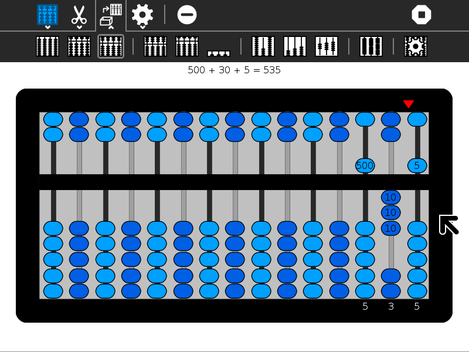
Abacus lets the learner explore different representations of numbers using different mechanical counting systems developed by the ancient Romans and Chinese. There are several different variants available for exploration: a suanpan, the traditional Chinese abacus with 2 beads on top and 5 beads below; a soroban, the traditional Japanese abacus with 1 bead on top and 4 beads below; the schety, the traditional Russian abacus, with 10 beads per column, with the exception of one column with just 4 beads used for counting in fourths; and the nepohualtzintzin, a Mayan abacus, 3 beads on top and 4 beads below (base 20). There is also a binary abacus, a hexadecimal abacus, and several abacuses that lets you calculate with common fractions: 1/2, 1/3, 1/4, 1/5, 1/6, 1/8, 1/9, 1/10, and 1/12. And there is a customization toolbar that lets you design your own abacus. The Incan abacus (Yupana) as a standalone program.
Using Abacus¶
Clearing the abacus¶
Before you start an arithmetic operation, you need to “clear” the abacus. The upper beads should be positioned against the top of the frame and the lower beads should be positioned against the bottom of the frame. This is the default position for the abacus when you launch the activity.
Note that some of the abacuses (e.g., the schety) do not have any upper beads. In such cases, all of the beads should start in the down position. Also note that the Clear Button on the main toolbar will also clear the abacus for you.
Reading the abacus¶
In each column, the bottom beads represent 1s and the top beads represent 5s. (The exception is the column in the schety with only 4 beads. These are 1/4 each.) So for each bead you raise up from the bottom in a column add 1 and for each bead you lower from the top in the same column, add 5.
The columns themselves represent decimal positions from right to left, e.g., 1s, 10s, 100s, 1000s, etc. (There are some exceptions: (1) the nepohualtzintzin uses base 20, e.g., 1s, 20s, 400s, 8000s, etc.; (2) on the schety, the beads to the right of the column with just four beads are 0.1s, 0.01s, 0.001s, and 0.0001s; the black beads on the Caacupé abacus are fractions; and the custom abacus lets you choose whatever (integer) base you want.)
The current value is always displayed on the frame. Experiment and you will quickly learn to write and read numbers.
Examples: In the gallery below, several simple examples are shown. In the gallery of images above, the number 54321 is shown on each of the different abaci.
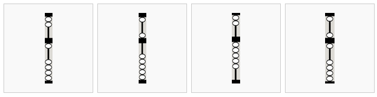
From left to right,
1 bottom bead is up, corresponding to 1 unit
1 top bead is down, corresponding to 5 units
5 bottom beads are up, also corresponding to 5 units
1 bottom bead is up and 1 top bead is down, corresponding to 6 units
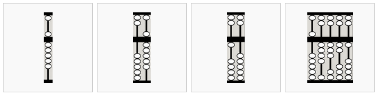
From left to right,
5 bottom beads are up and 1 top bead is down, corresponding to 10 units (time to “carry” to the left)
This 10 is equivalent to…
… this 10
54321
Note: The display always assumes a fixed unit column, but you can override this choice.
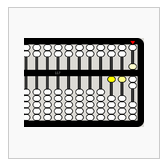
The beads moved most recently are highlighted.
Addition¶
To add, simply move in more beads to represent the number you are adding. There are two rules to follow: (1) whenever you have a total of 5 units or more on the bottom of a column, cancel out the 5 by sliding the beads back down and add a five to to the top; and (2) whenever you have a total of 10 units or more in a column, cancel out the 10 and add one unit to the column immediately to the left. (With the nepohualtzintzin, you work with 20 rather than 10.)
Example: 4+3+5+19+24=55
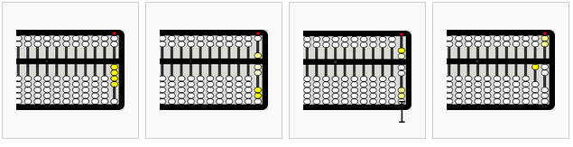
from left to right,
4
+3=7 (5–2=3)
+5=12
carry 5s to next column
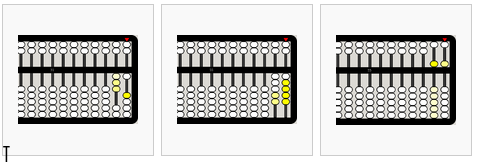
from left to right,
+19=31 (20-1=19)
+24=55
4+3+5+19+24=55
Subtraction¶
Subtraction is the inverse of addition. Move out beads that correspond to the number you are subtracting. You can “borrow” from the column immediately to the left: subtracting one unit and adding 10 to the current column.
Example: 26–2–4–6–10=4
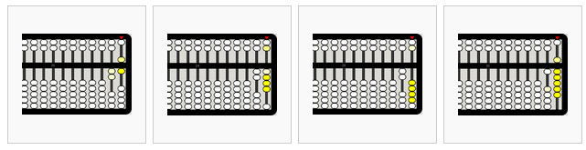
from left to right,
26
26-2=24
24-4=20
cary 10 to the right
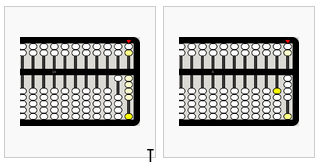
from left to right,
20-6=14
14-10=4
Multiplication¶
There are several strategies for doing multiplication on an abacus. In the method used in the example below, the multiplier is stored on the far left of the abacus and the multiplicand is offset to the left by the number of digits in the multiplier. The red indicator is used to help keep track of where we are in the process.
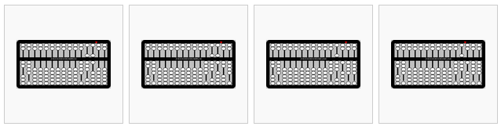
from left to right,
486×24=? Begin by placing 24 in the left-most columns and 486 offset from the far right by two columns (since 24 has two digits). Set the indicator to the right of the multiplicand.
Multiply the least-significant digits (LSD) of the multiplier (4) and multiplicand (6) and place the results (4×6=24) in the far right columns.
Multiply the next digit in the multiplier (2, which corresponds to 2×10=20) and the LSD of the multiplicand (6) and add the results (2×6=12) on the right (advancing one column to the left to correspond to the power of the digit in the multiplier).
Move the indicator over one column to the left.
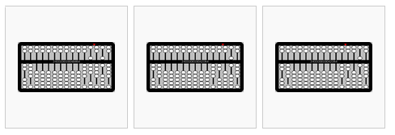
from left to right,
Repeat for the next digit in the multiplicand (8): 4×8=32
2×8=16
Move the indicator over one column to the left.
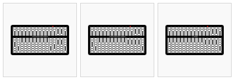
from left to right,
Repeat for the next digit in the multiplicand (4): 4×4=16
2×4=8
Clear the multiplier from the left and view the result: 486×24=11664
Division¶
Simple division (by a single-digit number) is the inverse of multiplication. In the example below, the dividend is put on the left (leaving one column vacant for the quotient) and the divisor on the right.
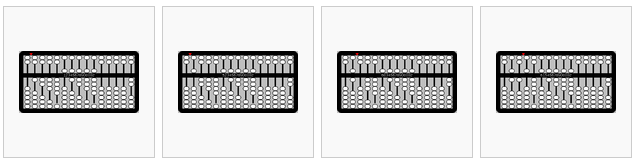
from left to right,
123456789÷2=? Place the dividend (123456789) on the left, leaving one blank column. Place the divisor (2) on the right.
Working from the left to the right, divide a digit in the quotient and then move the indicator one column to the right. 1÷2=0.5
2÷2=1
3÷2=1.5
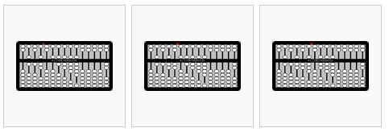
from left to right,
4÷2=2
5÷2=2.5
6÷2=3
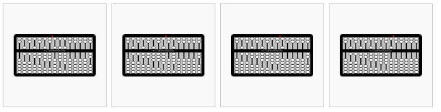
from left to right,
7÷2=3.5
8÷2=4
9÷2=4.5
The result is 61728394.5.
Fractions¶
The fraction abacus lets you add and subtract common fractions: 1/2, 1/3, 1/4, 1/5, 1/6, 1/8, 1/9, 1/10, and 1/12, The fractional value is determined by the number of black beads on a rod, e.g., to work with thirds, use the rod with three beads, to work with fifths, use the rod with five beads.
The rods with white beads are whole numbers in base 10; from left to right 100000, 10000, 1000, 100, 10, and 1.
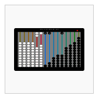
20 + 1 + 1/2 + 1/3 + 1/6 = 22
The toolbars¶
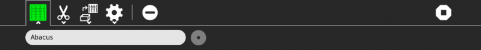
From left to right:
project-toolbar button: see below
edit-toolbar button: see below
abacus-toolbar button: see below
customization-toolbar button
clear button: clear the abacus
stop button: exit the activity
From left to right:
copy: copy current value to clipboard
paste: paste a value from the clipboard into the abacus
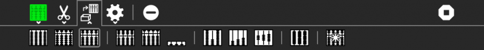
From left to right:
Decimal button: decimal abacus
Soroban button: Japanese abacus
Saupan button: Chinese abacus
Nepohualtzintzin button: Mayan abacus
Hexadecimal button: hexadecimal abacus
Binary button: binary abacus
Schety button: Russian abacus
Fraction button: fraction abacus
Caacupe button: fraction abacus with +/–
rod button: Cuisenaire-like abacus
custom button: your custom abacus
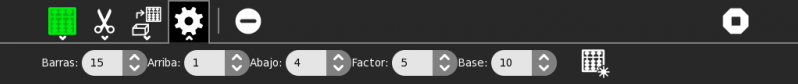
From left to right:
rods: select the number of rods:
top beads: select the number of beads on the top of the frame
bottom: select the number of beads on the bottom of the frame
factor: select the multiplication factor of top beads (e.g., on the Chinese abacus, each top bead counts as 5× the value of a bottom bead on the same rod)
base: select the base to determine the value of bottom beads across rods; this is 10 on most conventional abacuses, but 20 on the Mayan abacus, 16 on the hexadecimal abacus, and 2 on the binary abacus.
create: you must push this button to activate the selections you’ve made
Gallery of abaci¶
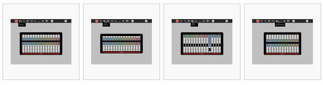
From left to right,
suanpan (Chinese)
soropan (Japanese)
schety (Russian)
nepohualtzintzin (Mayan)
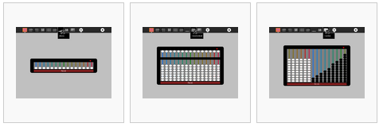
From left to right,
binary (base 2)
hexadecimal (base 16)
fractions (1/2, 1/3, 1/4,…)
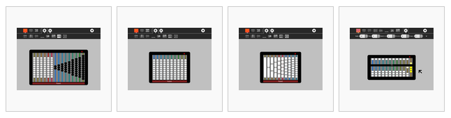
From left to right,
Caacupe (fractions with +/–)
decimal (base 10)
Cuisenaire-style rods (fractions)
custom, as shown: octal (base 8)
Learning with Abacus¶
Some lesson plans for using Abacus are found here.
Using beads or pebbles, you can make an abacus. What is the difference between the abacus on the computer and a physical abacus?
It is possible to create a custom abacus. I often use the example of Sumerian mathematics: the Sumerians counted on the digital bones (phalanges) of their fingers, so the base of their counting system was 12. All of the 12s (and 60s) we have in our mathemateics, e.g., 12 hours, 60 seconds, etc. have their roots in Sumerian math. But the Sumerians never invented an abacus. What would a Sumerian abacus look like?
Extending Abacus¶
A fun project is to compare calculations using Abacus with the Calculate Activity. Which is faster? Which is more accurate? Which is better for estimating? Which is better for comparing?
Abacus supports paste, so you can take numeric values from other programs and paste them into the abacus to see what their representations are; for example, I often paste numbers into the hexadecimal abacus as a quick way of converting decimal to hexidecimal.
Abacus also supports copy, so you can take a sum calculated on an abacus and export it into SimpleGraph or some other data-visualization Activities.
A fun collaborative mode might be to have a number randomly selected and each sharer work independently to post it on the abacus of their choice first. There could be a tally of beads awarded for each correct answer.
Reporting Problems¶
If you discover a bug in the program or have a suggestion for an enhancement, please file a ticket in our bug-tracking system.
You can view the open tickets here.